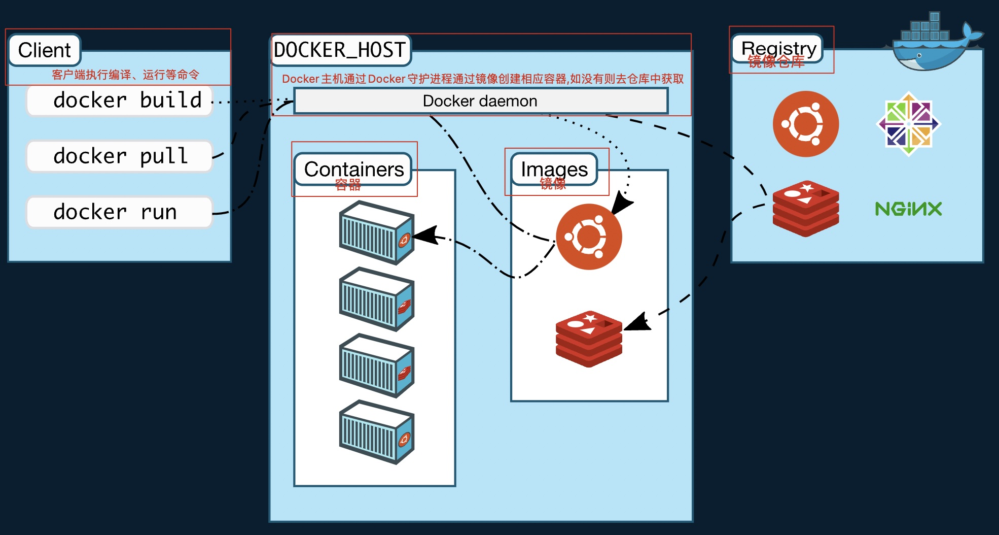

Docker概要
1. 前置知识 - Docker是什么 可以干什么?
# 官方文档是这样说的：
1. Docker(基于Go语言开发) 是一个用于开发、发布和运行应用程序的开放平台。
2. Docker 提供了在称为容器的松散隔离环境中打包和运行应用程序的能力。
- 隔离和安全性允许您在给定主机上同时运行多个容器。容器是轻量级的，包含运行应用程序所需的一切，因此您无需依赖主机上当前安装的内容。
- 您可以在工作时轻松共享容器，并确保与您共享的每个人都获得以相同方式工作的同一个容器。
# 上述两点翻译过来也就是说Docker是用于对应用组件的封装、分发、部署、运行等生命周期的管理.
# 使用户的APP（可以是一个WEB应用或数据库应用等等）及其运行环境能够做到 "一次镜像，处处运行"
# Docker的出现解决了运行环境和配置问题的软件容器， 方便做持续集成并有助于整体发布的容器虚拟化技术。
# Docker 本身是一个容器运行载体或称之为管理引擎。我们可以把应用程序和配置依赖打包好形成一个可交付的运行环境，这个打包好的运行环境就是image镜像文件。只有通过这个镜像文件才能生成 Docker容器实例(类似Java中new出来一个对象)。
2. 前置知识 - Docker三要素
1. 镜像(Image)
- 就好比类,每一个类都是一个镜像
- Docker 镜像（Image）就是一个只读的模板。
- 镜像可以用来创建 Docker 容器，—个镜像可以创建很多容器(就好比一个类可以创建多个实例)。
2. 容器(Container)
- 每一个类的实例就是一个容器
- Docker 利用容器(Container）独立运行的一个或一组应用，应用程序或服务运行在容器里面，容器就类似于一个虚拟化的运行环境，容器是用镜像创建的运行实例。
- 就像是Java中的类和实例对象一样，镜像是静态的定义，容器是镜像运行时的实体。
- 容器为镜像提供了一个标准的和隔离的运行环境，它可以被启动、开始、停止、删除。每个容器都是相互隔离的、保证安全的平台
3. 仓库
- 是集中存放镜像文件的场所。
- 就好比Maven中的仓库一样,区别就是Maven的仓库存放的是各种jar而docker仓库存储的是各种镜像。
# 如下图

3. Docker安装前提条件
# 安装说明以及前提条件:
1. Docker 并非是一个通用的容器工具，它依赖于已存在并运行的 Linux 内核环境。
2. Docker 实质上是在已经运行的 Linux 下制造了一个隔离的文件环境，因此它执行的效率几乎等同于所部署的 Linux 主机。
3. 因此，Docker 必须部署在 Linux 内核的系统上, 如果其他系统想部看 Docker 就必须安装一个虚拟 Linux 环境。
4. 目前, Centos仅发行版本中的内核支持 Docker。
5. Docker 运行在CentOS7(64-bit)上， 要求系统为64位、Linux系统内核版本为3.8以上
# 如何查看linux内核信息?
1. cat /etc/redhat-release 查看linux版本
2. uname -r
3. uname命令用于打印当前系统相关信息（内核版本号、硬件架构、主机名称和操作系统类型等）
# Docker官网:
1. https://www.docker.com/ 官网地址
2. https://hub.docker.com/ 镜像仓库地址
3. https://docs.docker.com/engine/install/centos/ docker服务端下载地址基于CentOS
4. Docker服务端安装步骤
4.1 确保是ContOS7及以上版本
#可查看版本信息
cat /etc/redhat-release
4.2 卸载旧版本
#查看是否安装过docker
rpm -qa | grep docker
# 卸载命令
sudo yum remove docker \
docker-client \
docker-client-latest \
docker-common \
docker-latest \
docker-latest-logrotate \
docker-logrotate \
docker-engine
4.3 确保gcc相关环境
#安装gcc
yum -y install gcc
#gcc-c++
yum -y install gcc-c++
4.4 安装yum-utils包以及设置仓库
#安装yum-utils包
yum install -y yum-utils
#设置镜像裤地址
yum-config-manager --add-repo http://mirrors.aliyun.com/docker-ce/linux/centos/docker-ce.repo
#https://download.docker.com/linux/centos/docker-ce.repo docker官方地址国内有超时等问题
#http://mirrors.aliyun.com/docker-ce/linux/centos/docker-ce.repo 阿里云地址
4.5 更新yum软件包索引(可选)
yum makecache fast
4.6 安装Docker引擎
#安装最新版本的 Docker Engine、containerd 和 Docker Compose 或进入下一步安装特定版本
yum install docker-ce docker-ce-cli containerd.io docker-compose-plugin
4.7 启动docker
#启动docker
systemctl start docker
#查看版本
docker version
#查看docker进程信息
ps -ef|grep docker
4.8 docker hello-world
docker run hello-world
4.9 卸载
#停止docker
systemctl stop docker
#重启docker
systemctl restart docker
#卸载 Docker Engine、CLI、Containerd 和 Docker Compose 软件包
yum remove docker-ce docker-ce-cli containerd.io
#主机上的映像、容器、卷或自定义配置文件不会自动删除。要删除所有映像、容器和卷：
rm -rf /var/lib/docker
rm -rf /var/lib/containerd